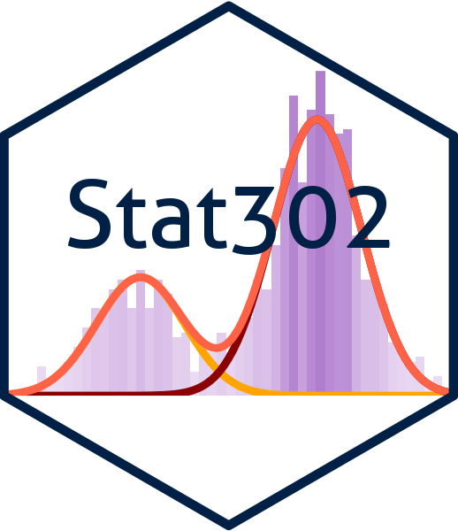

Stat 302 - Winter 2025/26
Last modified — 05 Aug 2025
Definition: A scientific procedure undertaken to make a discovery, test a hypothesis, or demonstrate a known fact.
Example of an experiment: Release your pen from 4.9 meters above the ground.
Outcomes of the experiment:
The pen will fall to the ground.
It takes about 1 second before it touches the ground.
We are certain that the pen will touch the ground;
we are less sure if it will take exactly 1 second.
Common sense: The outcome of some experiments cannot be determined with sufficient certainty beforehand.
Roll a die: which side will face up?
Draw a card from a well-shuffled deck: which one you will get?
How many students show up for class today?
Even though there seem to be no rules on the outcome of rolling a die, if we repeat the experiment many times, some pattern emerges.
Probability theory aims to describe the pattern with a mathematical model.
In ideal situations, the probability theory can be very successful: Casino always wins.
Axioms in mathematics: Statements or propositions regarded as being established, accepted, or self-evidently true.
Mathematical Theorem: A general proposition not self-evident but proved by a chain of reasoning; a truth established by means of accepted truths.
If the accepted truths are falsified, the Theorem is also falsified.
The probability theory in Stat 302 is a branch of mathematics. It is a system based on a set of Axioms.
Its conclusions cannot be falsified unless the Axioms are falsified.
Stat 302 mostly lectures on mathematical aspects of the probability theory.
We use real world examples to demonstrate the relevance of the theory.
We now motivate two subjects of probability based on experiment whose outcome is uncertain.
We denote it by \(\Omega\), and a generic outcome, also called sample point, by \(\omega\) (i.e. \(\omega \in \Omega\)).
There is no rule that we have to use \(\Omega\) as the notation for the sample space.
Always read the context.
Roll a die: \(\Omega = \{ 1,2,3,4,5, 6 \}\).
Draw a card: \(\Omega = \{ 2\spadesuit, 2\diamondsuit, \ldots, A\clubsuit ,A \heartsuit \}\).
% yield of chemical process: \(\Omega =\left[ 0,100\right]\).
Maximum wind speed in YVR in 2023: \(\Omega =[0, \infty)\)
Remark: We may not need to provide full description of \(\Omega\) in many cases.
Notation: We commonly use upper case letters (\(A\), \(B\), \(C\), …) for events.
Because events are sets, all notions regarding sets are applicable:
\(\omega \in A\) means “\(\omega\) is an element of \(A\)”.
\(C \subset D\) means “\(C\) is a subset of \(D\)”.
Remember operations \(A \cup B\), \(A \cap B\) and so on.
Events of interests are often formed by outcomes sharing some properties.
Roll a dice:
\(A= \{ 2, 4, 6 \}\) (“roll an even number”);
\(B= \{1, 2, 3\}\) (“roll a 3 or less”).
Chemical process: \(C= [ 9, 14 ] = \{ \text{yield is between 9 and 14\%} \}\)
Max-wind-speed: \(A=(80, \infty )= \{ \text{over 80 km/hour}\}\)
It is a useful skill to precisely list the sample points in a verbally described event.
Suppose \(A\), \(B\) are events (subsets of \(\Omega\)).
Union: \(A \mathop{\mathrm{\mathchoice{\bigcup}{\cup}{\cup}{\cup}}}B\) \[\omega \in A \cup B \Leftrightarrow \omega \in A \mbox{ or } \omega \in B\]
Intersection: \(A \cap B\) \[\omega \in A \cap B \Leftrightarrow \omega \in A \mbox{ and } \omega \in B\]
Complement: \(A^c\) \[\omega \in A^c\Leftrightarrow \omega \notin A\]
Symmetric difference: \(A \, \triangle \, B\) \[A \, \triangle \, B \, = \, \left( A \cap B^c \right) \, \cup \, \left( A^c \cap B \right)\]
Commutative:
\(A \cup B \ = \ B \cup A\)
\(A \cap B \ = \ B \cap A\)
Associative:
\(A\cup B\cup C \, = \, \left( A\cup B\right) \cup C=A\cup \left( B\cup C\right)\)
\(A\cap B\cap C \, = \, \left( A\cap B\right) \cap C=A\cap \left( B\cap C\right)\)
Distributive:
\(\left( A\cup B\right) \cap C \, = \, \left( A\cap C\right) \cup \left( B\cap C\right)\)
\(\left( A\cap B\right) \cup C \, = \, \left( A\cup C\right) \cap \left( B\cup C\right)\)
\(A = B\) \(\Leftrightarrow\) \(A \subseteq B\) and \(B \subseteq A\)
To prove two events are equal as above, the general approach is to show both \[( A\cup B )^{c} \subseteq A^{c}\cap B^{c}\] and \[A^{c}\cap B^{c} \subseteq ( A\cup B ) ^{c}.\]
We give part of a proof on the next slide.
take any \(\omega \in ( A\cup B )^c\), we must have \(\omega \notin A \cup B\);
This implies \(\omega \notin A\) and \(\omega \notin B\) (because if either \(\omega \in A\) or \(\omega \in B\) then we’d have \(\omega \in A \cup B\)).
Hence \(\omega \in A^c\) and \(\omega \in B^c\),
This is the same as \(\omega \in A^c \cap B^c\).
That is, \(\omega \in ( A\cup B )^c\) implies \(\omega \in A^c \cap B^c\) which is \[( A\cup B ) ^{c} \, \subseteq \, A^{c}\cap B^{c}.\]
Try it yourself to prove \(A^{c}\cap B^{c} \subseteq ( A\cup B ) ^{c}\).
\(A \ = ( A\cap B ) \, \cup \, ( A\cap B^{c} )\)
First: \(A \subseteq \left( A\cap B\right) \, \cup \, \left( A\cap B^{c}\right)\): Take \(\omega \in A\), then either \(\omega \in B\) or \(\omega \notin B\). In the first case: \(\omega \in A \cap B\), in the second case: \(\omega \in A \cap B^c\). Thus \(\omega \in \left( A\cap B\right) \, \cup \, \left( A\cap B^{c}\right)\).
Also: \(\left( A\cap B\right) \, \cup \, \left( A\cap B^{c}\right) \subseteq A\): Take \(\omega \in \left( A\cap B\right) \, \cup \, \left( A\cap B^{c}\right)\). If \(\omega \in \left( A\cap B\right)\) then \(\omega \in A\). If \(\omega \in \left( A\cap B^{c}\right)\) then \(\omega \in A\). Thus, we always have \(\omega \in A\).
\(A \, \cup\, B \ = \ A \, \cup \left( B\cap A^{c}\right)\)
The power set of \(\Omega\) (denoted \(2^\Omega\)) is the set of all possible subsets of \(\Omega\). Example: Suppose \(\Omega \ = \ \{ 1,2,3 \}\). Then \[2^{\Omega } \, = \Bigl\{ \varnothing , \{ 1\} , \{ 2 \} , \{ 3 \} , \{ 1,2 \} , \{ 1,3 \} , \{ 2,3 \}, \{ 1, 2, 3 \} \Bigr\}\]
The symbol \(\varnothing\) denotes the empty set.
If \(\Omega\) has \(n\) elements, then \(2^{\Omega }\) has \(2^{n}\) elements. In symbols: \[\# ( 2^{\Omega } ) \ = \ 2^{\#\Omega }.\]
List the \(n\) elements of \(\Omega\) as \[\Omega =\left\{ \omega _{1},\omega _{2},...,\omega _{n}\right\}\]
Any event \(A \subseteq \Omega\) is uniquely obtained by including or excluding each of \(\omega _{1},\omega _{2},\ldots,\omega _{n}\).
Hence, we have 2 options for each of the \(n\) sample points, leading to \(2^n\) distinct outcomes.
Even though we cannot predict the outcome of an experiment well enough in many cases, we have an idea about the chance of various outcomes:
If you toss a coin, the chance of observing a head is formidable.
If you buy a lottery ticket, the chance of winning the grand price is negligible.
In probability theory, we quantify the chance for “every subset” of the sample space in a self-consistent way.
Such a system was first proposed by Kolmogorov.
Let \(\Omega\) be a sample space and \({\cal B}\) be the collection of “all subsets” of \(\Omega\).
A probability function is a function \(\mathbb{P}\) with domain \({\cal B}\) so that
Axiom 1: \(\mathbb{P}( \Omega ) =1\).
Axiom 2: For all \(A \in {\cal B}\), we have \(\mathbb{P}( A ) \geq 0\).
Axiom 3: If \(\{ A_{n}\}_{n \ge 1}\) are a sequence of disjoint events, then \[\mathbb{P}\left( \bigcup_{n=1}^{\infty }A_{n}\right) \, = \sum_{n=1}^{\infty }\mathbb{P}( A_{n})\]
The value of \(\mathbb{P}(A)\) is called the probability of event \(A\).
Apparently, \(0 \leq \mathbb{P}(A) \leq 1\): trivial but useful. If your calculation gives an event negative probability value, re-do the calculation.
The key phrase a sequence of is important: this rule does not go beyond.
Being disjoint means for all \(i \neq j\), \[A_i \cap A_j = \varnothing.\]
As a mathematical theory, probability definition does not rely on an “uncertainty experiment”.
Unless otherwise specified, \(A\), \(B\) and so on are events, and \(\Omega\) is the sample space.
Probability of the complement: \[\mathbb{P}( A^{c} ) =1-\mathbb{P}( A )\]
Monotonicity: \[A\subset B\Rightarrow \mathbb{P}( A ) \leq \mathbb{P}(B )\]
Probability of the union: \[\mathbb{P}( A\cup B ) =\mathbb{P}( A ) +\mathbb{P}( B ) - \mathbb{P}( A\cap B )\]
Boole’s inequality: \[\mathbb{P}( \bigcup _{i=1}^{m}A_{i} ) \leq \sum_{i=1}^{m}\mathbb{P}( A_{i} )\]
Recall Mathematical Theorem: A general proposition not self-evident but proved by a chain of reasoning; a truth established by means of accepted truths.
By “proof” regarding probability formulas, we use a chain of reasoning to show they are implied by means of the accepted three Axioms.
Note that (1) \(\Omega = A \cup A^{c}\) and (2) \(A\) and \(A^c\) are disjoint.
By Axioms 1 and 3, we have \[1 = \mathbb{P}( \Omega ) = \mathbb{P}(A ) +\mathbb{P}( A^c)\] which implies \(\mathbb{P}( A^{c} ) =1-\mathbb{P}( A )\).
We note that \(B = ( B\cap A ) \cup ( B\cap A^{c})\);
Since \(A \subset B\) is given, we have \(B \cap A = A\). Hence, \(B = A \cup ( B \cap A^{c})\)
In addition, \(A\) and \(B \cap A^{c}\) are disjoint. By Axiom 3 , we get \(\mathbb{P}( B ) = \mathbb{P}( A ) + \mathbb{P}( B\cap A^{c})\).
By Axiom 2, \(\mathbb{P}( B\cap A^{c}) \ge 0\). Thus, \[\mathbb{P}( B ) = \mathbb{P}( A ) + P ( B\cap A^{c}) \ge \mathbb{P}( A ).\]
First recall that \(A\cup B = A\cup ( B\cap A^{c} )\).
Note that \(A\) and \(B\cap A^{c}\) are disjoint events. Hence by Axiom 3: \[\mathbb{P}( A\cup B ) =\mathbb{P}( A ) +\mathbb{P}( B \cap A^{c} )\]
Splitting \(B\) into union of two disjoint events: \(B = ( B\cap A ) \cup ( B\cap A^c )\) and applying Axiom 3, we get \[\mathbb{P}( B) = \mathbb{P}( B\cap A ) +\mathbb{P}( B\cap A^c )\]
The formula is obtained by combining the above two conclusions.
\[\mathbb{P}\left( \bigcup _{i=1}^{n}A_{i}\right) \leq \sum_{i=1}^{n}\mathbb{P}\left( A_{i}\right)\]
We will prove it by induction.
For \(n=2\): \[\begin{aligned} \mathbb{P}\left( A_{1}\cup A_{2}\right) & = \mathbb{P}\left( A_{1}\right) +\mathbb{P}\left( A_{2}\right) -\mathbb{P}\left( A_{1}\cap A_{2}\right) \\ \\ & \leq \mathbb{P}\left( A_{1}\right) +\mathbb{P}\left( A_{2}\right)\end{aligned}\] because \(\mathbb{P}\left( A_{1}\cap A_{2}\right) \geq 0\)
John borrows 2 books.
Suppose there is a 0.5 probability he likes the first book, 0.4 that he likes the second book, and 0.3 that he likes both.
What is the probability that he will NOT like either of the 2 books?
Jane must take two tests, call them \(T_1\) and \(T_2\).
Suppose the probability she passes test \(T_1\) is 0.8, test \(T_2\) is 0.7 and both tests is 0.6.
Calculate the probability that:
She passes at least one test.
She passes at most one test.
She fails both tests.
She passes only one test.
It is typical in introductory probability theory course to give a story first, followed by specifying events verbally.
In these cases, your answer should be a sentence, not just with the context included.
The best mathematical approach is to define some events, and express other events of interest using those events.
Rather than relying on algebra as in our examples, it can be easier to use Venn diagram to have these events connected.
There can be many ways to connect them, all lead to a viable probability calculation.
Exercise 2
Suppose that \(\mathbb{P}\left( A\right) =0.85\) and \(\mathbb{P}\left( B\right) =0.75.\) Show that \[\mathbb{P}\left( A\cap B\right) \geq 0.60.\]
More generally, prove the Bonferroni inequality: \[\mathbb{P}\left( \cap _{i=1}^{n}A_{i}\right) \geq \sum_{i=1}^{n}\mathbb{P}\left( A_{i}\right) -\left( n-1\right) .\]
Kolmogorov’s axioms tell us that if we have (a) sample space, (b) collection of events, and wish to create a probability function \(\mathbb{P}(\cdot)\); what properties this function should have.
The last a few examples show that if such a function \(\mathbb{P}(\cdot)\) has been given, how one may derive the value of \(\mathbb{P}(A)\) from the probabilities of other events.
We next suggest a way to set up (a) sample space, (b) collection of events, and (c) probability function \(\mathbb{P}(\cdot)\) for a special type of experiments.
Suppose the sample space \(\Omega\) is finite. \[\Omega \, = \, \Bigl\{ \omega _{1},\omega _{2}, \ldots,\omega _{n}\Bigr\}\]
In many applications, we trust that these distinct outcomes are equally likely so that we wish to make \[\mathbb{P}( \{ \omega _{i} \} ) = a \, , \quad a \in (0, 1].\]
For such an experiment, we get a natural probability function.
Notice that \(\Omega = \bigcup _{i=1}^{n} \left\{ \omega _{i}\right\}\), and \(\{\omega _{i}\}_{i=1}^n\) are disjoint events.
The probability theory Axioms require \[\begin{aligned} 1 &= \mathbb{P}\left( \Omega \right)= \mathbb{P}\Big ( \bigcup _{i=1}^{n}\left\{ \omega_{i}\right\} \Big ) = \sum_{i=1}^{n}\mathbb{P}\left( \left\{ \omega _{i}\right\} \right) =\sum_{i=1}^{n} a \, = \, n a. \end{aligned}\]
Our only option is to let \(a = 1 / n\).
The axioms further require that for any event \(A \subseteq \Omega\): \[\begin{aligned} \mathbb{P}(A) &= \sum_{\omega _{i}\in A} \mathbb{P}( \{ \omega_{i} \}) = \sum_{\omega _{i}\in A}\frac{1}{n} = \frac{\#A}{\#\Omega}\\ &= \frac{\#\{\mbox{favorable outcomes} \}}{\#\{\mbox{possible outcomes}\}} \end{aligned}\]
Being “favourable” means those in the event of interest: \(A\) in this example.
To calculate probabilities, we count the number of sample points in the event of interest.
Counting the number of sample points in a set can be mathematically surprisingly complicated.
Combinatorial theory deals with this problem.
We will learn some basic combinatorial rules and techniques for this purpose.
A die is rolled repeatedly until we see an outcome being 6.
Specify/describe the sample space.
Let \(E_{n}\) denote the event that the number of rolls is exactly \(n\) (\(n=1,2, \ldots\)). Describe the event \(E_{n}\).
Describe the event \(E_{1}\cup E_{2}\) and \(( \bigcup _{n=1}^{\infty} E_{n}) ^{c}\).
Verbally interpreting \(E_{1}\cup E_{2}\), \(\bigcup_{n=1}^{\infty} E_{n}\), and \(( \bigcup_{n=1}^{\infty } E_n) ^{c}\):
A system has 5 components, which can either be working or have failed.
The experiment consists of observing the current status (W/F) of the 5 components.
Describe the sample space for this experiment.
How much is \(\# \Omega\)?
Suppose that the system will work if either components (1 and 2), or (3 and 4), or (1, 3 and 5) are working.
List the outcomes in the event \(D =\left\{ \mbox{The system works}\right\}\)?
Let \(A= \{ \text{components 4 and 5 have failed} \}\). How much is \(\# A\)?
List the outcomes in \(A \cap D\).
NOTE: the number of elements of a set \(A\) (aka its cardinal number) is denoted by \(\#A.\) or \(|A|\) or (sometimes) \(\Vert A \Vert\)
(c) The system works if (1 and 2), or (3 and 4) or (1, 3 and 5) work.
Let \(D = \{ \mbox{The system works}\}\). Let us count it.
(d) A\(=\left\{ \text{\textbf{4 and 5 have failed}}\right\}\). How many outcomes are there in A?
Two dice have two sides painted red, two painted black, one painted yellow, and the other painted white.
When this pair of dice is rolled, what is the probability that both dice show the same color facing up?
Remark: If not explicitly declared, this type of problem assumes “equal likely outcomes”.
A small community consists of 20 families.
Four of them have 1 child, 8 have 2 children, 5 have 3 children, 2 have 4 children, and 1 has 5 children.
What is the probability that a randomly chosen family has \(i\) children, for each \(1 \le i \le 5\)?
What is the probability that a randomly chosen child comes from a family with \(i\) children, for each \(1 \le i \le 5\)?
Jargon: By “randomly chosen”, it says that the specific unit is equally likely selected.
Applying the equal probability experiment/model for (a): family; (b): child.
We organize the information as follows:
| i | Families with i children | Children from families w/ i children |
|---|---|---|
| 1 | 4 | 4 |
| 2 | 8 | 16 |
| 3 | 5 | 15 |
| 4 | 2 | 8 |
| 5 | 1 | 5 |
| Total | 20 | 48 |
Catch: There are 20 families, 48 children in this community.
If one family is chosen at random, what is the probability it has \(i\) children, \(i=1, 2, 3, 4, 5\)?
If one child is randomly chosen, what is the probability that it comes from a family having \(i\) children, \(i=1,2,3,4,5\)?
Remark Part (a) and Part (b) are probability calculations under Two Different experiments.

Stat 302 - Winter 2025/26